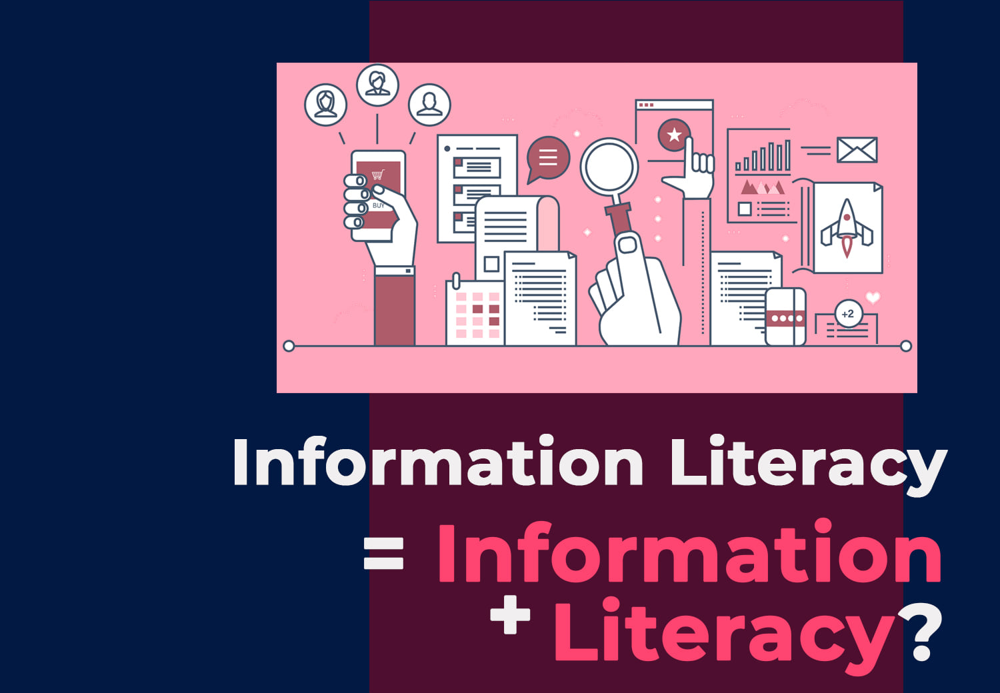

Mô tả khoá học
Khóa học Kỹ năng thông tin (Information Literacy) được thiết kế dành riêng cho sinh viên UIT nhằm trang bị những kỹ năng thiết yếu trong việc tìm kiếm, đánh giá và sử dụng thông tin một cách hiệu quả phục vụ học tập và nghiên cứu khoa học. Nội dung khóa học bao gồm các phương pháp tìm kiếm thông tin hiện đại, sử dụng các công cụ số và AI, đánh giá chất lượng nguồn thông tin, khai thác các cơ sở dữ liệu học thuật, thực hiện tổng quan tài liệu (literature review), cũng như hiểu biết về đạo văn, quyền sở hữu trí tuệ và liêm chính học thuật. Khóa học lấy sinh viên làm trung tâm, kết hợp lý thuyết và thực hành, giúp người học phát triển năng lực tự chủ trong nghiên cứu và học tập, phù hợp với tiêu chuẩn quốc tế về Kỹ năng thông tin.

Điều kiện tiên quyết
Khóa học Kỹ năng thông tin được thiết kế dành cho sinh viên mới tiếp cận kỹ năng thông tin học thuật, do đó không yêu cầu kiến thức chuyên môn sâu trước khi tham gia. Tuy nhiên, để đạt hiệu quả tối đa, sinh viên nên có những nền tảng cơ bản sau:
Kỹ năng sử dụng máy tính và Internet.
Để thực hành hiệu quả các nội dung của khoá học, sinh viên cần có kỹ năng sử dụng máy tính và Internet. Hầu hết hoạt động như tìm kiếm tài liệu học thuật, truy cập cơ sở dữ liệu, đánh giá nguồn tin, hay trích dẫn và quản lý tài liệu đều được thực hiện trên nền tảng số. Ngoài ra, việc nộp bài, trao đổi với giảng viên và cộng tác trực tuyến trong khóa học cũng đòi hỏi người học biết cách truy cập và thao tác trên máy tính, trình duyệt web, email cũng như các công cụ văn phòng cơ bản như Word.
Khả năng đọc hiểu tiếng Việt và tiếng Anh ở mức cơ bản.
Trong khóa học, sinh viên cần có khả năng đọc hiểu tiếng Việt và tiếng Anh ở mức cơ bản để tiếp cận tài liệu học tập đa dạng. Nhiều cơ sở dữ liệu, bài báo khoa học, hướng dẫn tra cứu và thuật ngữ chuyên ngành được viết bằng tiếng Anh, trong khi nội dung giảng dạy và ví dụ minh họa chủ yếu sử dụng tiếng Việt. Việc nắm vững cả hai ngôn ngữ giúp người học hiểu trọn vẹn bài giảng, khai thác nguồn tài nguyên quốc tế và áp dụng kiến thức vào học tập, nghiên cứu một cách hiệu quả.
Kiến thức và kỹ năng từ khóa học này sẽ là nền tảng quan trọng để sinh viên vận dụng hiệu quả trong các môn học nâng cao như: SS004. Kỹ năng nghề nghiệp, DS311. Kỹ năng nghiên cứu và viết bài báo khoa học, CS519. Phương pháp luận nghiên cứu khoa học,...
Mục tiêu đầu ra
| STT | Kỹ năng | Mô tả |
|---|---|---|
| 1 | Nhận diện & truy cập thông tin | Xác định rõ nhu cầu thông tin và phạm vi tìm kiếm. Sử dụng thành thạo công cụ tìm kiếm, chatbot AI, diễn đàn học thuật, và cơ sở dữ liệu để thu thập dữ liệu chính xác, phù hợp với mục tiêu nghiên cứu. Hiểu đặc điểm, độ tin cậy và rủi ro của thông tin trên Internet để khai thác đúng cách. |
| 2 | Đánh giá chất lượng thông tin | Nhận biết các nguồn đáng tin cậy và phân tích thông tin bằng khung tiêu chí CRAAP (Currency, Relevance, Authority, Accuracy, Purpose). Đánh giá tính cập nhật, uy tín và mức độ phù hợp của tài liệu phục vụ nghiên cứu học thuật. |
| 3 | Khai thác cơ sở dữ liệu học thuật | Thành thạo việc tìm kiếm tài liệu trong các cơ sở dữ liệu do Thư viện UIT và ĐHQG-HCM cung cấp, cũng như các nguồn mở quốc tế. Hiểu các chỉ số khoa học (Impact Factor, h-index) và định danh tác giả (ORCID, ResearcherID) để chọn nguồn tài liệu chất lượng. |
| 4 | Thực hiện tổng quan tài liệu | Áp dụng kỹ thuật tìm kiếm nâng cao, quản lý và sắp xếp thông tin để thực hiện tổng quan tài liệu có hệ thống. |
| 5 | Tuân thủ liêm chính học thuật | Hiểu rõ khái niệm đạo văn, quyền sở hữu trí tuệ và chuẩn mực đạo đức nghiên cứu. Thực hành trích dẫn và lập danh mục tài liệu theo chuẩn quốc tế (APA, IEEE…) nhằm đảm bảo tính minh bạch và tôn trọng công sức học thuật của người khác. |
Đánh giá khoá học
Khóa học Kỹ năng thông tin được đánh giá thông qua cả kiểm tra lý thuyết và bài tập thực hành, phản ánh cả kiến thức và kỹ năng ứng dụng thông tin của sinh viên.
| Hoạt động | Phần trăm |
|---|---|
| Tham gia buổi học | 10% |
| Kiểm tra lý thuyết | 40% |
| Bài tập thực hành | 50% |
Kiểm tra lý thuyết.
Bao gồm câu hỏi đúng/sai, trả lời ngắn và tình huống thực tiễn, thiết kế theo mô hình tham khảo từ các trường đại học hàng đầu như Princeton, Cornell và MIT. Các câu hỏi tập trung đánh giá khả năng nhận diện, phân tích và vận dụng thông tin theo các cấp độ tư duy khác nhau.
Bài tập thực hành.
Sinh viên thực hành tìm kiếm, đánh giá và sử dụng thông tin trên các cơ sở dữ liệu học thuật, hoàn thiện bài tập theo hướng dẫn và nộp đúng hạn. Phần thực hành chiếm tỷ trọng lớn nhằm khuyến khích năng lực áp dụng kiến thức vào thực tế.